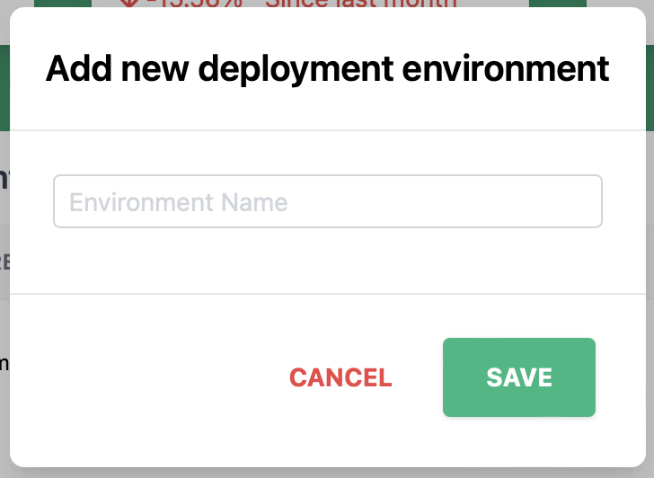
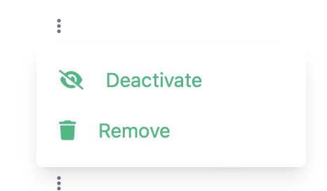
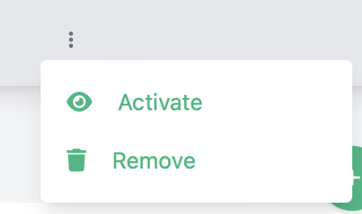

Environments
The environments page lets a user manage a logical list of deployable environments for the overall system.

Creating an environment
- Click the
 button at the bottom of the screen
button at the bottom of the screen -
The create new environment dialog will appear

-
Enter the new environment name (This is required)
- Click Save to create the environment
Enabling/Disabling an environment
Deployable environments can be enabled and disabled. This might be a better option than deleting the environment if there is historical data related to the environment that should be kept.
Heads Up! Enabling and Disabling can only be performed by administrators of the deployable system!
Disable an environment
To disable an environment, find the row with the environment to be disabled, click the 3 vertical dots and select Deactivate.

Enable an environment
To enable an environment, find the row with the environment to be enabled, click the 3 vertical dots and select Activate.

Deleting an environment
Deployable environments can be deleted. Beware, however, that this will also delete all information related to that deployable environment
Heads Up! Deleting can only be performed by administrators of the deployable system!
To delete an environment, find the row with the environment to be deleted and click the 3 vertical dots and select Remove.